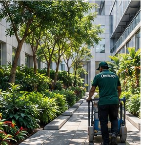
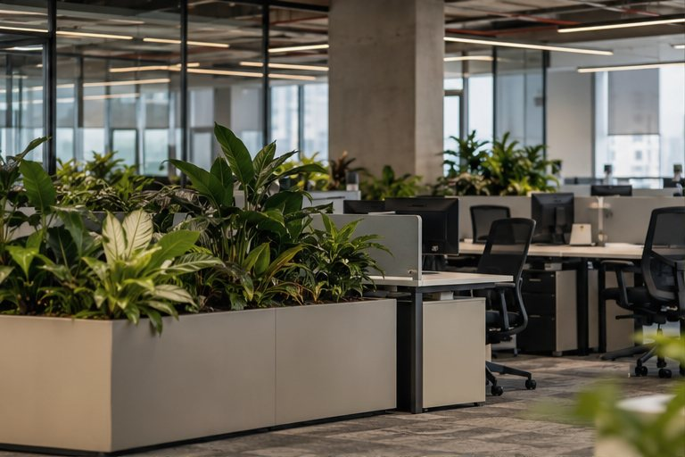
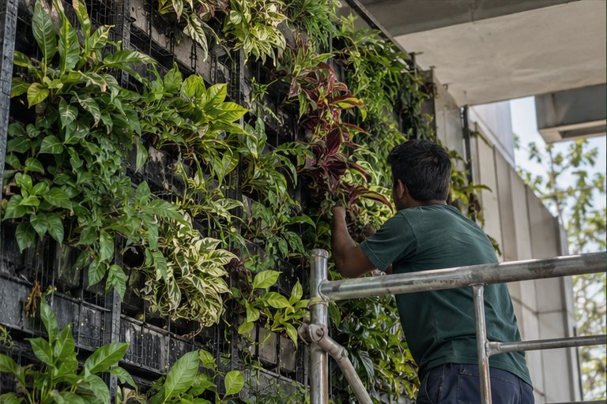
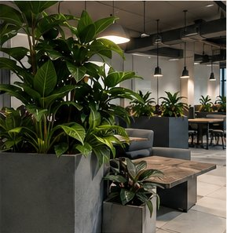
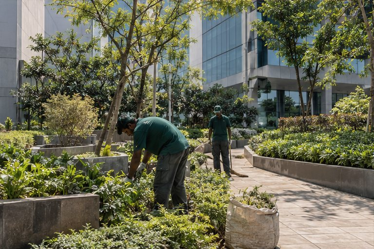

The questions behind the greenery.
Engagement stories and decision frameworks for procurement, facilities and property leaders. No client identities are disclosed.

The first three accounts are drawn from types of work OneScape undertakes, with identities and identifying details withheld. The final two are clearly marked illustrative commercial decision studies — frameworks, not claimed client results.

The hidden cost of inconsistency
Why a consistent operating framework can matter more than an identical checklist at every site.

When a living wall becomes a liability
Why irrigation, access and replacement provisions belong in the installation brief.

The cost of a first impression
The commercial case for discreet, condition-led care in guest-facing environments.

The ownership question
A practical method for comparing plant ownership, rental and future replacement exposure.

The overlooked revenue line
How specialist input, careful scope design and variation controls can strengthen an IFM offering.
Horticulture, viewed
as a business decision.
Brief, practical perspectives on what procurement teams and FM leaders should examine before making the next choice.
 PROCUREMENT · CONTRACT DESIGN
PROCUREMENT · CONTRACT DESIGNThe lowest horticulture quote can be the most expensive
The monthly rate is only one part of the full cost of care.
Read perspective ↗
IFM PARTNERSHIPS · SERVICE MODELWhere specialist horticulture fits in an IFM contract
A specialist service line can help an IFM partner broaden its offer without introducing delivery friction.
Read perspective ↗ WORKPLACE FINANCE · PLANT RENTAL
WORKPLACE FINANCE · PLANT RENTALRent or own? The 24-month question
Evaluate asset ownership and recurring service on the same time horizon.
Read perspective ↗